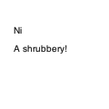

text
text(txt, x, y, width=None, height=1000000, outline=True)
Draws text to the screen. The first parameter sets the string of text to display ("always between quotes"). The following two parameters set the location of the text's baseline. The fourth, fifth and sixth parameter are optional. The fourth parameter specifies a width for text blocks, the fifth the maximum height. Text in a block is wrapped across multiple lines. The alignment for text in a block can be set with the align() command. By default, text is not outlined when saved as a PDF. Optionally, a sixth parameter outline=True can be supplied so text will be outlined.
 |
text("A shrubbery!", 10, 40)
text("Ni", 10 ,20) |
a tuple with the width and height of the text block